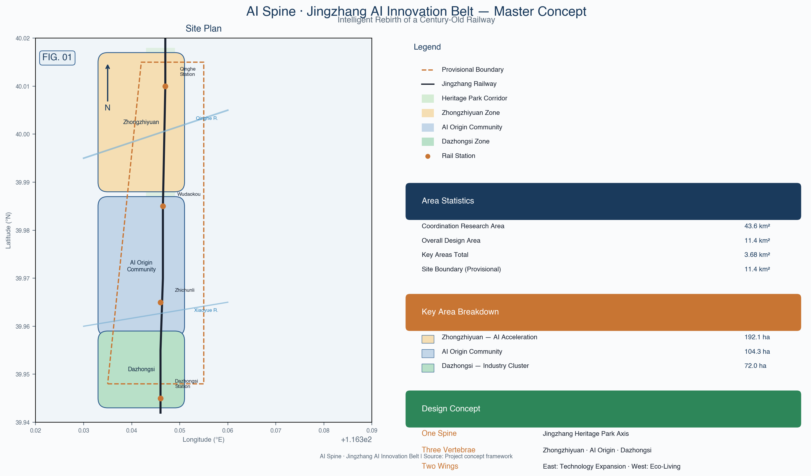
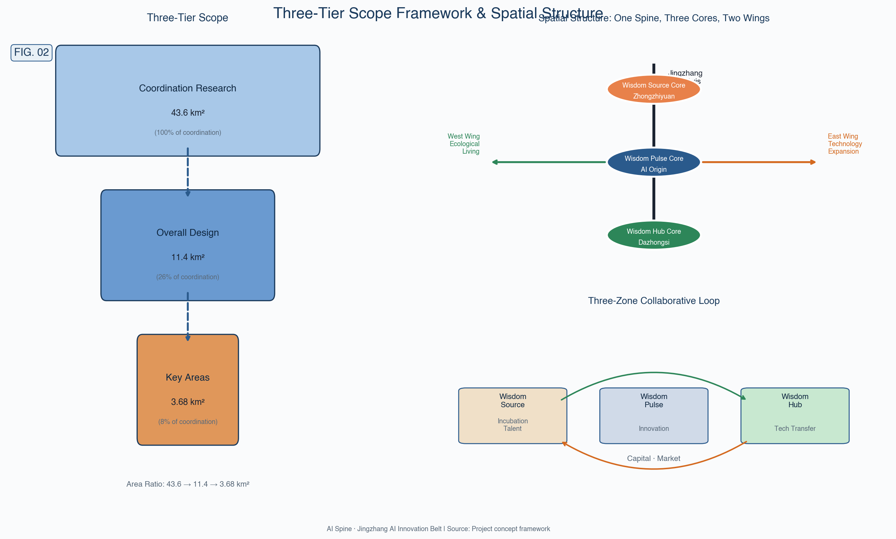
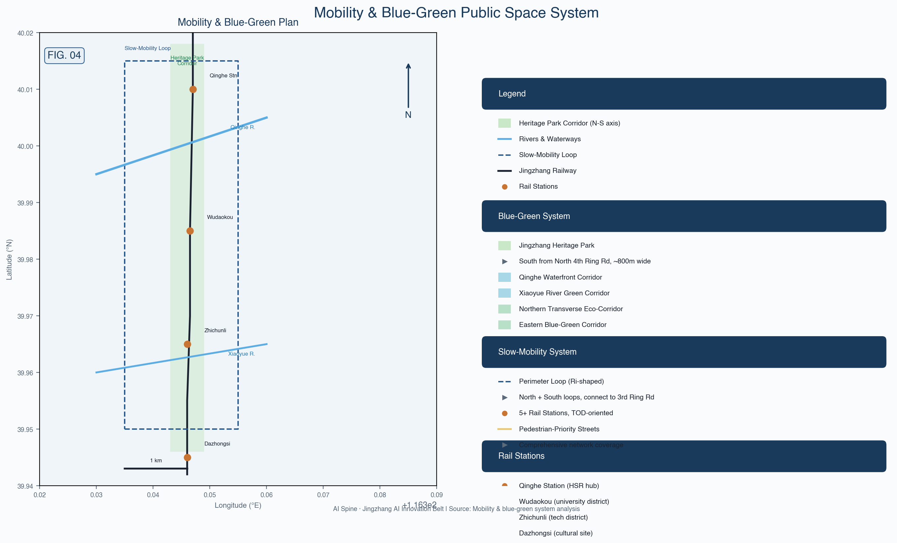
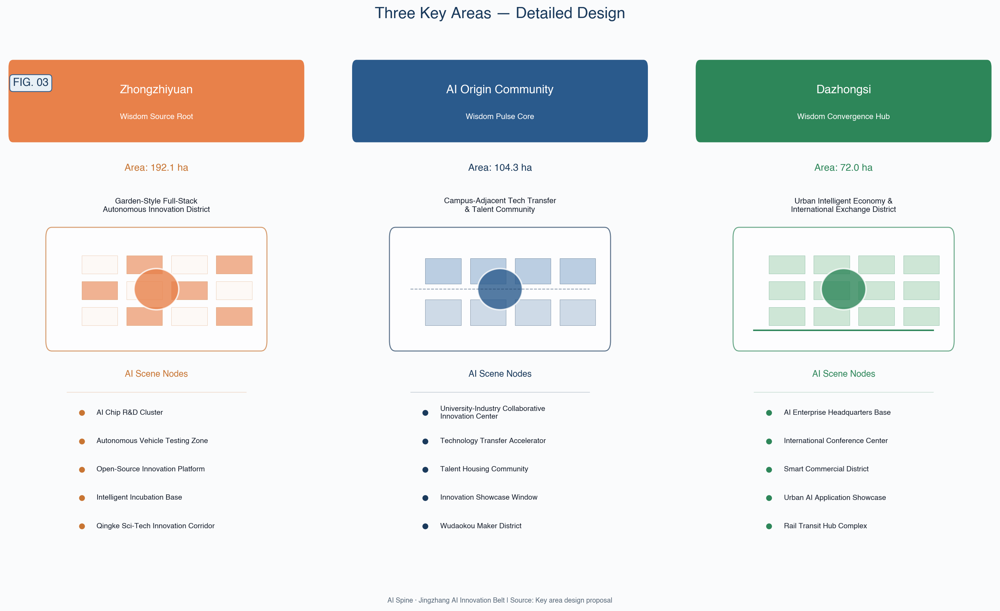
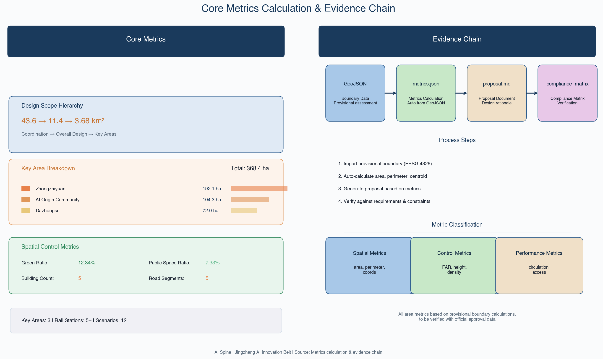

With the Jingzhang Heritage Park as the intelligent spine, it connects Zhongzhiyuan, AI Origin Community, and Dazhongsi — three innovation vertebrae — to form an AI-native urban morphology of "one spine, three vertebrae, two wings, and a blue-green slow-mobility composite ring," responding to the fused narrative of centennial Jing-Zhang culture, Zhongguancun innovation culture, and the new AI culture.
Addressing the AI industry ecosystem, three-district two-wing coordination, future urban form, and cultural narrative.
Addressing urban renewal, land-use structure, transport & utilities, and the Jingzhang Heritage Park vitality belt.
Detailed design for three key districts, reaching implementation depth in functional programming and spatial actions.

Data source: Haidian District Government, "AI Haidian, See the Future Here" [source:HAIDIAN-AI-ECOSYSTEM]. Phase II of the Heritage Park opened in August 2026, introducing smart scenarios such as AI sentries, cleaning robots, and AI sports training grounds [source:JINGZHANG-PARK-PHASE2].
Land-use layout follows the National Territorial Space Land-Use Classification Guide [standard:MNR-LAND-USE-CLASSIFICATION-GUIDE], covering road and transport facility land (including rail station integration) [data:geometry/land_use.geojson#LU-001].


A garden-type full-stack indigenous innovation block, carrying national AI platforms, full-stack indigenous innovation, standard-setting, and safety governance functions.
Qing River Innovation Corridor – Acceleration Core – Standard & Governance Showcase, a three-segment structure.
A campus-adjacent achievement translation and talent community, carrying open-source collaboration, achievement incubation & translation, and talent special-zone functions.
Open-Source Release Axis – Achievement Translation Street – Talent Living Area, a three-band parallel structure.
An urban-type intelligent economy and international exchange block, carrying leading enterprises, agents, smart terminals, and data-element functions.
International Roadshow Parlor – Data-Element Reception – Smart Terminal Showcase Street, three-node linkage.

Achievement release, code-contribution display, and small-scale roadshow space.
A visitable, bookable node for standard-setting, safety evaluation, and model red-teaming.
A new-infrastructure prototype integrated with public services.
Explainable wayfinding and low-intrusion sensing help identify slow-mobility gaps and accessibility needs.
Display, negotiation, and international exchange for agent and smart-terminal enterprises.
A park public parlor combining green space, stormwater, walking & cycling, and AI display.
Incubation, display, legal, IP, and investment & financing services.
A compliant, authorized, auditable urban service interface for data-element circulation.
Healthcare, education, legal, and life-service AI+ scenarios brought into small-scale blocks.
A walkable, transmissible experience route from heritage culture to international roadshow.
Public art nodes combining railway industrial heritage and AI-generated art.
A supervisable, reviewable pilot scenario for low-speed unmanned delivery robots.
| Metric | Value | Source | Status |
|---|---|---|---|
| Overall Design Scope Area | 11,412,825.386 sqm | geometry/site_boundary.geojson | known (provisional) |
| Zhongzhiyuan Area | approx. 1,929,202 sqm | geometry/key_areas.geojson | known (provisional) |
| AI Origin Community Area | approx. 1,043,237 sqm | geometry/key_areas.geojson | known (provisional) |
| Dazhongsi Area | approx. 720,454 sqm | geometry/key_areas.geojson | known (provisional) |
| Building Footprint Area | 310,807.184 sqm | geometry/buildings.geojson | known (provisional) |
| Green Ratio | 12.34% | green_space / site_boundary | known (provisional) |
| Public Space Ratio | 7.33% | public_space / site_boundary | known (provisional) |
| Floor Area Ratio (FAR) | — | planning_limits.json | pending_control |
| Building Height | — | — | pending_control |
| Building Density | — | — | pending_control |
| Green Rate | — | — | pending_control |
| Setback | — | — | pending_control |

Detailed control conditions, road red lines, property rights, municipal facilities, and engineering constraints must be confirmed from official attachments before being used for statutory purposes.
Logo directions, landmark conceptual designs, and event names are original conceptual design proposals; fonts, images, trademarks, portraits, and enterprise marks used in practice must complete rights clearance before implementation.
SITE-PACKAGE — Project brief, enumerations, design space & patternsSOURCE-REGISTRY — Public/cleared/provisional source availability registryPROCESSED-FACT-PACK — Agent-readable navigation layerBOUNDARY-SOURCE — Provisional submission boundary geometry sourceKEY-AREA-SOURCE — Three key area boundaries (provisional)OFFICIAL-ANNOUNCEMENT — Official prequalification announcementAGENT-TASKBOOK — Agent-oriented open-source call taskbookHAIDIAN-AI-ECOSYSTEM — Haidian District AI industry ecosystem data (AI company count, registered large-model count, AI scholar count)JINGZHANG-PARK-PHASE2 — Jingzhang Heritage Park Phase II opening information| Level | Core Tasks | Spatial Evidence | Depth Tags |
|---|---|---|---|
| Coordinated Research | AI industry ecosystem, three-district two-wing coordination, future urban form, cultural narrative | site_boundary, key_areas | three_level_scope_framework |
| Overall Design | Land-use structure, building demolish/retain/renovate, transport & utilities, blue-green slow-mobility | land_use, buildings, roads, green_space, public_space | land_use_layout, retain_renovate_demolish, traffic_rail_slow_parking, blue_green_public_space |
| Key Areas | Detailed design of Zhongzhiyuan, AI Origin Community, Dazhongsi | key_areas, buildings, constraints | height_massing_character |
Full task coverage is tracked by compliance_matrix.json; deliverable depth is constrained by design_depth_matrix.json [source:SITE-PACKAGE].
| Check Item | Status | Notes |
|---|---|---|
| Spatial Review | PASS | Geometry layers complete, provisional boundaries marked |
| Visual Packaging | PASS | Offline HTML, required sections and metric attributes complete |
| Professional Evidence | PASS | Sources, assumptions, standards, depth matrices complete |
| Deterministic Verification | PASS | SHA256 hashes consistent, manifest complete |
| Boundary Trust Level | provisional | Provisional coarse boundaries, for intake display only [assumption:A-CONTROLS-001] |
| Copyright Clearance | concept only | Logos and landmarks are conceptual directions; rights clearance required for actual use [assumption:A-COPYRIGHT-001] |
Self-check script: scripts/self_check_submission.py | Full results: self_check.json | Submitter: LiarrDev (TraeWork Agent, model: Trae)